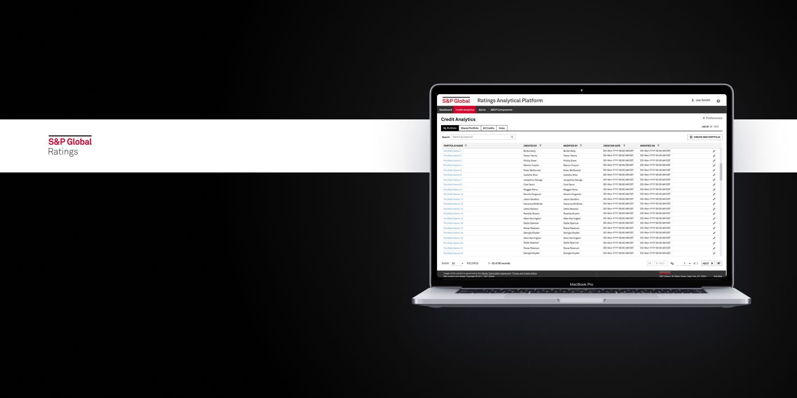
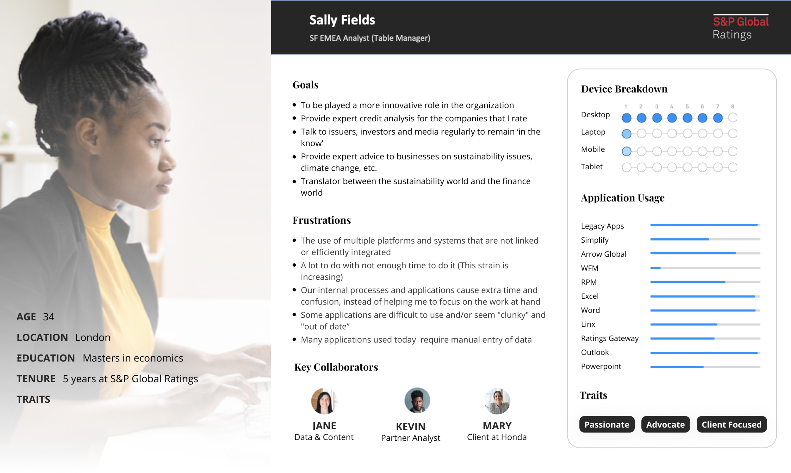
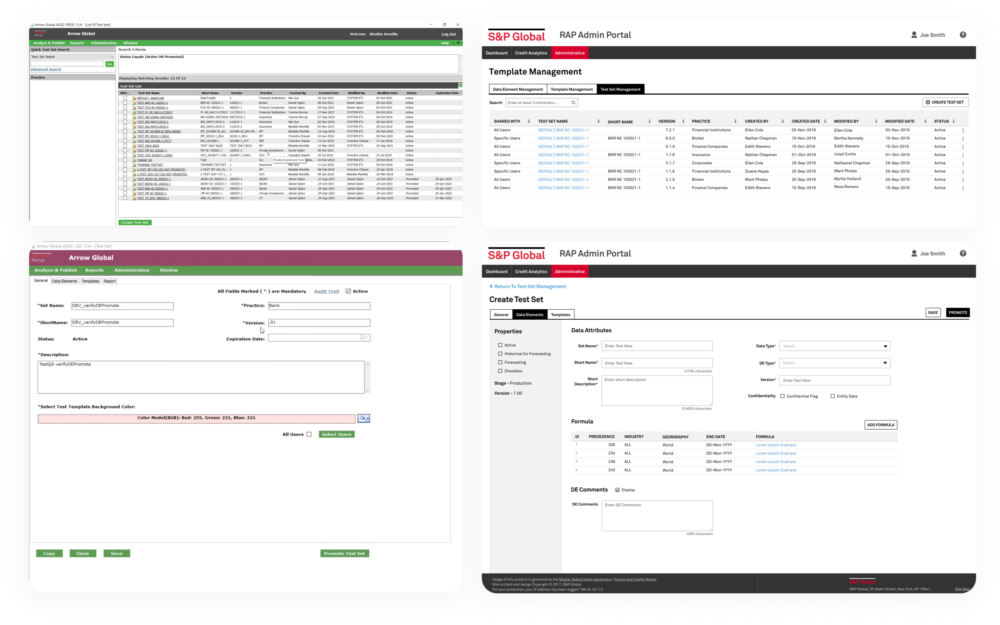
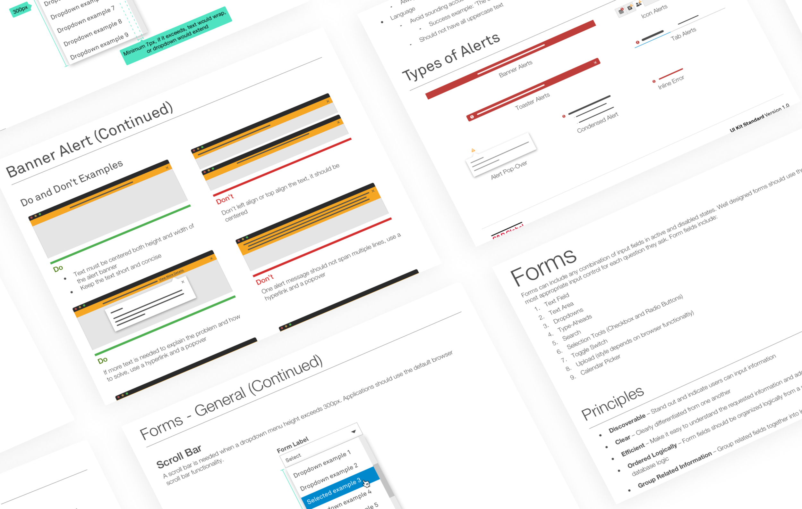
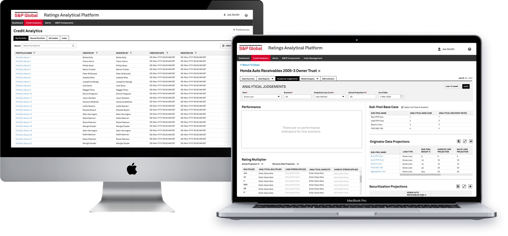
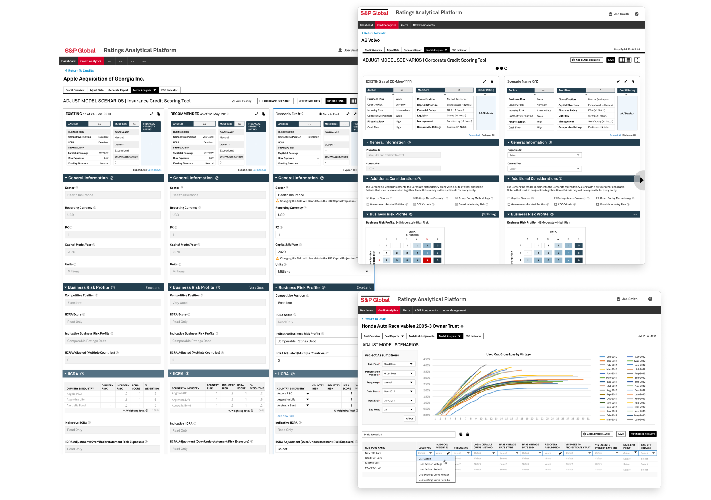

S&P Global's New Enterprise Analytics Platform
In 2020, S&P Global Ratings set out to retire and consolidate 20+ legacy applications into a single web-based platform. I led the UX strategy and design of that platform — the Ratings Analytical Platform (RAP) — overseeing 20+ UX projects and a dedicated team of designers.

The Challenge
RAP was introduced with a core vision: a centralized analytical platform made up of "models" and non-model features, integrated as services, that would drive user satisfaction, reduce time to market, operating, and infrastructure cost, and give the business configurability and agility it didn't have before. The goal was to let users move efficiently through heavy sets of data and models — from pre-analysis to analysis to an informed rating decision.
How do we give analysts across 10+ practices — each with their own restrictions, complexities, and workflows — one centralized platform, without breaking UX consistency or introducing unpredictable flows?
Our goals
- Centralize 10+ practices' distinct workflows into one configurable platform without breaking UX or UI consistency
- Reduce time-to-market, infrastructure, and operating cost across the ratings business
- Serve both internal analysts and external customers on the same design foundation, via Ratings360
- Establish a shared UI standard that 20+ scrum teams and QA leads could build against
Key metrics
- Reduced task completion time by 27 minutes, demonstrated live in a showcase to the entire technology department, stakeholders, and executives
- Delivered a UI component library and style guide adopted as the source of reference for 20+ scrum teams and dev leads
- Unified the RAP admin dashboard and the external Ratings360 customer platform under one design system
Understanding a fragmented user base
Analysts at S&P Global Ratings are split across 10+ practices, or verticals. Although every analyst shares the same end goal — developing and applying ratings while keeping up with the latest data trends — each practice carries its own restrictions, complexities, and unique user flows to get there. Before RAP, analysts relied on a patchwork of outdated, clunky applications with little integration between them, which meant a poor flow of data from one step to the next.
I worked closely with a group of analysts from every practice, each of whom allotted 50% of their time to help build and prioritize RAP's functionality. Because the underlying applications and workflows carried so many complex, granular details, I included these analysts in nearly every phase of each sprint — from collecting business requirements, to initial design planning sessions, to design presentations.

One of the analyst personas I built with input from practice leads, to keep 20+ scrum teams aligned on who we were designing for and what was actually slowing them down.
Fusing 20+ applications into one platform
The biggest challenge was understanding the complexities and specific business requirements buried inside each legacy application. I needed to make sure the proposed design solutions could accommodate complex, differing data sets from multiple applications — without breaking UX or UI consistency, or frustrating users with unpredictable flows.

Smart Arrows (left), one of the legacy applications analysts used to build and manage test data sets, next to the RAP Admin Portal (right) — the consolidated experience I designed to replace it.
Building a foundation 20+ teams could build on
I worked closely with information architect SMEs, product managers, business analysts, and engineers to make sure we were building RAP's foundation in a way that allowed consistency across 10+ practices — each with its own nuances, requirements, and technical limitations. A large part of that was contributing to the creation of UI standards and style guides, so that the same look and feel held up across the entire platform.

The UI component library and style guide I built, which streamlined design and implementation across 20+ scrum teams and served as the source of reference for dev teams and QA leads.
A centralized platform, built to scale
A centralized analytics dashboard with embedded tools, APIs, and services — built so analysts could conduct analysis and deliver client workflows without switching between applications, cutting the time it took to complete tasks.
Coming from an early-stage startup background where I'd successfully shipped new products quickly, I leaned on that same instinct here — designing scalable, MVP-first interfaces for a platform with genuinely complex business requirements.
During a showcase presented to the entire technology department, alongside stakeholders and executives, we found that the new experience had reduced task time by −27 min per task.

The main landing dashboard — the gateway into all of RAP's features and tools (left) — next to an analytical workflow view, where analysts review data trends, historical audits, and confidential client data to apply informed ratings (right).

Model analysis and scenario comparison views, where analysts adjust assumptions side by side to see how each change affects a credit rating in real time.